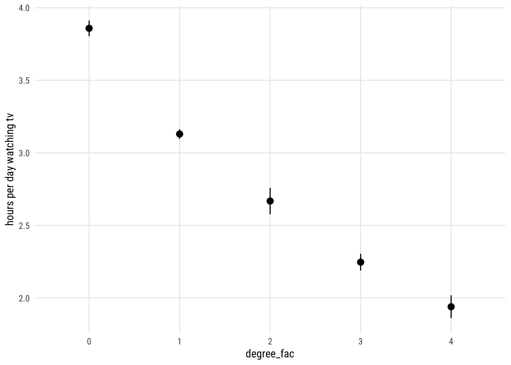
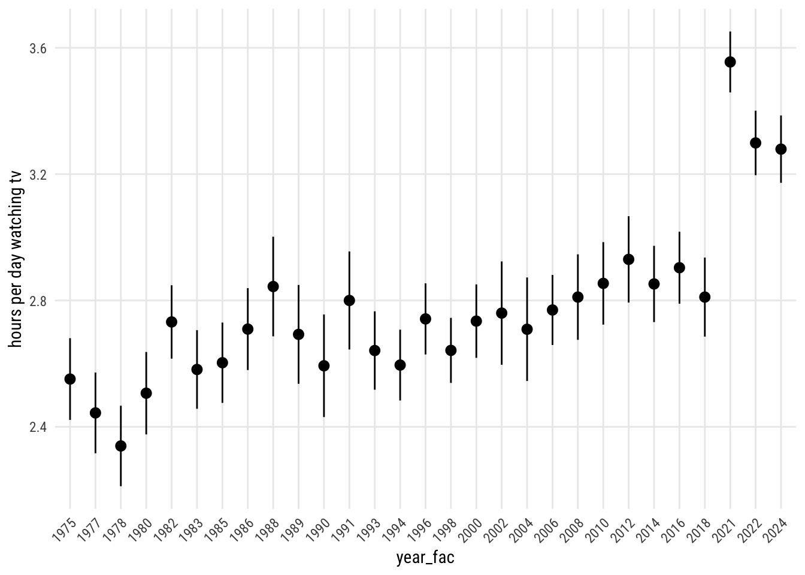
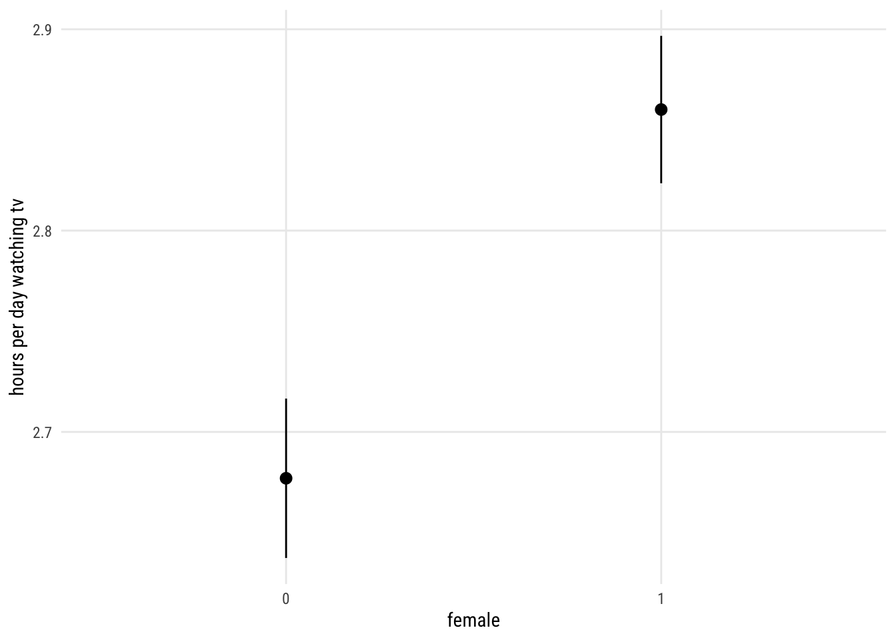
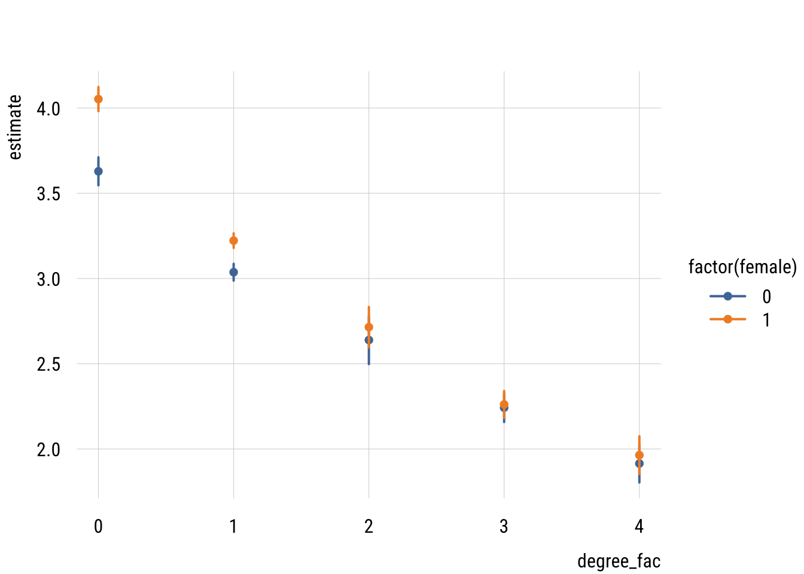

pacman::p_load(dplyr,
tidyr,
broom,
emmeans,
modelsummary,
marginaleffects,
ggeffects,
tinyplot,
ggplot2)Chapter 10 (alt)
Goals
We’re going to look at models with multiple categorical predictors, including their interactions. I’m going to take a very different approach than the book, using dummy coding and model comparison rather than contrast coding.
Set up
tinytheme("ipsum",
family = "Roboto Condensed",
palette.qualitative = "Tableau 10",
palette.sequential = "agSunset")# Match tinyplot ipsum style
theme_set(
theme_minimal(base_family = "Roboto Condensed") +
theme(panel.grid.minor = element_blank())
)
# Match Tableau 10 palette used by tinytheme (hex codes from ggthemes)
tableau10 <- c("#5778a4", "#e49444", "#d1615d", "#85b6b2", "#6a9f58",
"#e7ca60", "#a87c9f", "#f1a2a9", "#967662", "#b8b0ac")
options(
ggplot2.discrete.colour = \() scale_color_manual(values = tableau10),
ggplot2.discrete.fill = \() scale_fill_manual(values = tableau10)
)We are going to use the full GSS data for this example. The code below is how I originally got it and saved it to my machine…
data(gss_all, package = "gssr")
saveRDS(gss_all, file = "data/gss.rds")… and this is me retrieving it for this session and cleaning things up a bit.
d <- readRDS("data/gss.rds") |>
haven::zap_labels() |>
select(tvhours, degree, year, sex) |>
drop_na() |>
mutate(female = if_else(sex == 2, 1, 0), # female
degree_fac = factor(degree), # degree as factor
year_fac = factor(year)) # svy year as factorMultiple categorical predictors
We’re going to consider a few categorical predictors of tvhours:
female: whether the respondent is female (0, 1)degree_fac: highest degree earned from none (0) to graduate degree (4); stored as a factoryear_fac: a factor encoding the survey year1 from 1975 to 2024 (with gaps)
1 year is clearly a “numeric” variable in the obvious sense. We have year_fac stored as a factor so that we make no assumptions about its functional (e.g., straight line) relationship to the outcome when we use it in a model.
Let’s consider a simple model that uses all of these additively.
m1 <- lm(tvhours ~ degree_fac + female + year_fac,
data = d)The output here is super unwieldy but I’ll put it here if you want to see the summary().
NoteClick to expand
summary(m1)
Call:
lm(formula = tvhours ~ degree_fac + female + year_fac, data = d)
Residuals:
Min 1Q Median 3Q Max
-4.7364 -1.3895 -0.4297 0.9042 21.9266
Coefficients:
Estimate Std. Error t value Pr(>|t|)
(Intercept) 3.54935 0.06894 51.484 < 2e-16 ***
degree_fac1 -0.72826 0.03205 -22.725 < 2e-16 ***
degree_fac2 -1.19014 0.05425 -21.937 < 2e-16 ***
degree_fac3 -1.61124 0.04060 -39.681 < 2e-16 ***
degree_fac4 -1.91856 0.04910 -39.074 < 2e-16 ***
female 0.18315 0.02345 7.810 5.83e-15 ***
year_fac1977 -0.10716 0.09099 -1.178 0.238899
year_fac1978 -0.21179 0.09091 -2.330 0.019833 *
year_fac1980 -0.04476 0.09208 -0.486 0.626872
year_fac1982 0.18080 0.08694 2.079 0.037577 *
year_fac1983 0.03034 0.09000 0.337 0.736058
year_fac1985 0.05173 0.09099 0.569 0.569654
year_fac1986 0.15821 0.09187 1.722 0.085063 .
year_fac1988 0.29295 0.10274 2.851 0.004357 **
year_fac1989 0.14147 0.10232 1.383 0.166757
year_fac1990 0.04205 0.10475 0.401 0.688087
year_fac1991 0.24879 0.10182 2.444 0.014547 *
year_fac1993 0.09034 0.09017 1.002 0.316402
year_fac1994 0.04430 0.08605 0.515 0.606636
year_fac1996 0.19042 0.08619 2.209 0.027160 *
year_fac1998 0.09076 0.08311 1.092 0.274845
year_fac2000 0.18342 0.08746 2.097 0.035989 *
year_fac2002 0.20883 0.10536 1.982 0.047477 *
year_fac2004 0.15770 0.10567 1.492 0.135608
year_fac2006 0.21870 0.08590 2.546 0.010896 *
year_fac2008 0.25951 0.09455 2.745 0.006061 **
year_fac2010 0.30289 0.09275 3.266 0.001092 **
year_fac2012 0.37884 0.09506 3.985 6.75e-05 ***
year_fac2014 0.30112 0.08934 3.371 0.000751 ***
year_fac2016 0.35250 0.08698 4.053 5.07e-05 ***
year_fac2018 0.25950 0.09086 2.856 0.004294 **
year_fac2021 1.00387 0.08194 12.251 < 2e-16 ***
year_fac2022 0.74754 0.08329 8.975 < 2e-16 ***
year_fac2024 0.72786 0.08482 8.582 < 2e-16 ***
---
Signif. codes: 0 '***' 0.001 '**' 0.01 '*' 0.05 '.' 0.1 ' ' 1
Residual standard error: 2.492 on 45966 degrees of freedom
Multiple R-squared: 0.05467, Adjusted R-squared: 0.05399
F-statistic: 80.55 on 33 and 45966 DF, p-value: < 2.2e-16There are three sets of coefficients:
- the
degree_facones that show how each level ofdegree_facare different from the “none” reference category - the
femaleone that shows how female respondents are different from males - the
year_facones that show how different each survey is from the 1975 reference
This is easier to see in picture form. I will use plot_predictions() from the marginaleffects package. Using the newdata = balanced argument means that the predictions are averaged over equal values of the other predictors (i.e, in the first plot: half male, equal representation from all survey years).
plot_predictions(m1,
by = "degree_fac",
newdata = "balanced")
And here it is for the other ones. (I messed with the angle of the x-axis labels to avoid a mess on year.)
Show code
plot_predictions(m1,
by = "year_fac",
newdata = "balanced") +
theme(axis.text.x = element_text(angle = 45, hjust = 1))
Show code
plot_predictions(m1,
by = "female",
newdata = "balanced")
Interactions
The model above says that there are educational differences and year differences and sex differences. But the model also assumes that those differences are constant. That is, m1 assumes that, for example, the educational differences don’t differ by sex or year.
We can relax that assumption in a several ways and compare the results. We can allow any pair of those differences to moderate each other (3 options) or all three to affect each other.
m_deg_sex <- update(m1, tvhours ~ degree_fac * female + year_fac)
m_deg_yr <- update(m1, tvhours ~ degree_fac * year_fac + female)
m_sex_yr <- update(m1, tvhours ~ female * year_fac + degree_fac)
m_all <- update(m1, tvhours ~ degree_fac * female * year_fac)Now we can compare their performance.
performance::compare_performance(list(m1,
m_deg_sex,
m_deg_yr,
m_sex_yr,
m_all)) |>
select(AIC, AIC_wt, BIC, BIC_wt, PRE = R2) |>
tinytable::tt() |>
tinytable::format_tt(digits = 3,
num_fmt = "decimal",
num_zero = TRUE)| AIC | AIC_wt | BIC | BIC_wt | PRE |
|---|---|---|---|---|
| 214593.707 | 0.000 | 214899.481 | 0.997 | 0.055 |
| 214570.267 | 1.000 | 214910.986 | 0.003 | 0.055 |
| 214657.462 | 0.000 | 215941.712 | 0.000 | 0.058 |
| 214602.943 | 0.000 | 215153.336 | 0.000 | 0.056 |
| 214766.603 | 0.000 | 217308.894 | 0.000 | 0.062 |
With 46000 cases, it’s not too surprising that the BIC prefers the simple additive model. The AIC, however, prefers the model where degree and sex moderate each other. Let’s take a look at that.
preds <- avg_predictions(m_deg_sex,
variables = c("degree_fac", "female"),
newdata = "balanced")Show code
plt(estimate ~ degree_fac | factor(female),
data = preds,
type = "pointrange",
ymax = estimate + 1.96 * std.error,
ymin = estimate - 1.96 * std.error,
lw = 2)